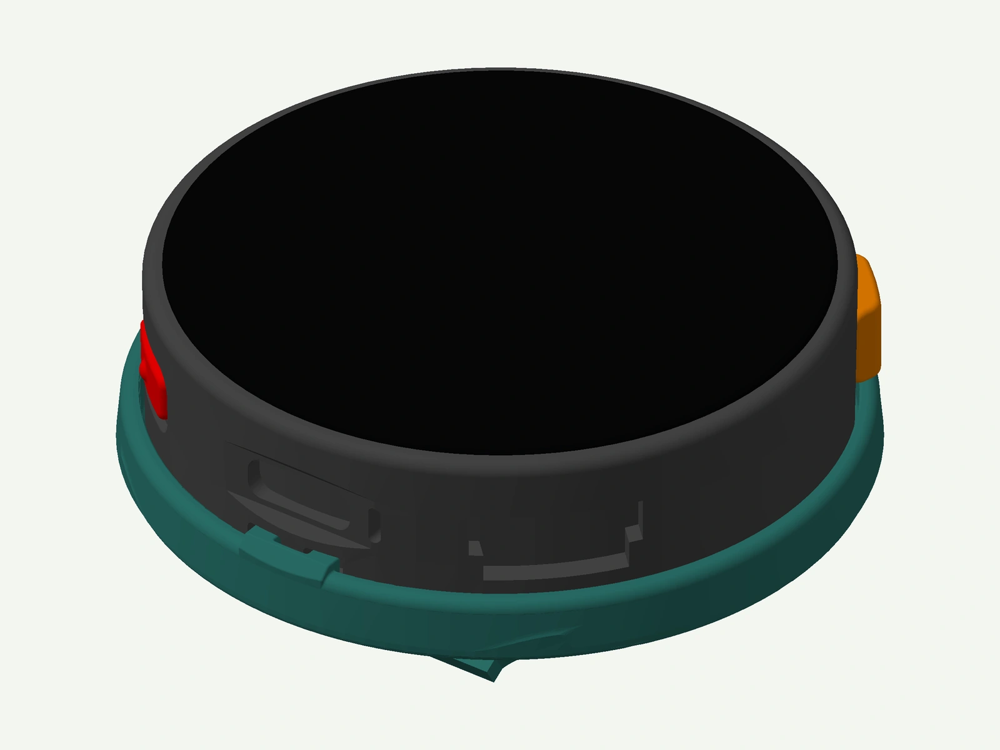
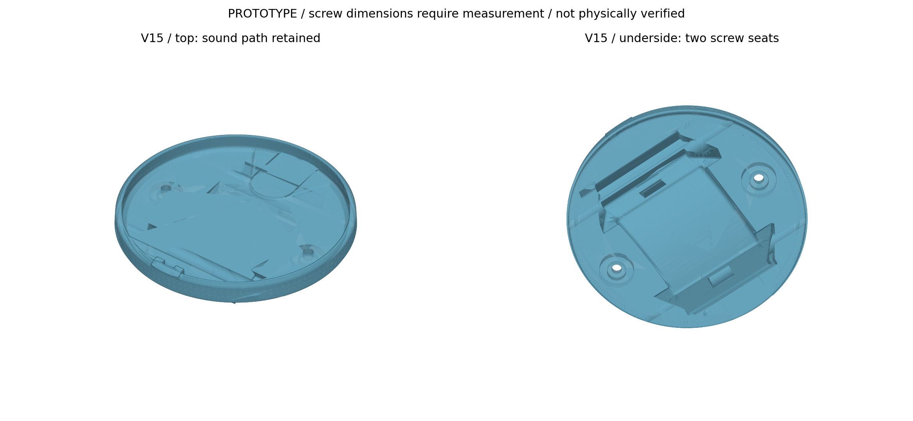

V15 BODY / PROTOTYPE
足なし版：編集・造形検討用
ホルダー単体は約55.700 × 55.628 × 12.610 mm。中央の腕接触基準から本体上端まで19.49 mmです。STLは組立座標のままで、造形向き・サポート・スライス設定は含みません。
STEPは形状編集や製造者への相談用です。実物の寸法確認と、材料・造形方法に合わせた印刷準備が必要です。
3D PRINTABLE WATCH CASE
試作モデル · 実物での適合確認が必要Apple Watchの小さい側のバンドを取り付けるための、M5Stopwatch用3Dプリントケースです。V15では本体を薄くし、背面2本のネジで固定する試作設計にしました。STL・STEPと設計資料を公開しています。
時計本体・バンドは別途必要です。

V15 / TWO SCREWS / PROTOTYPE
2026年10月29日公開
STL・STEP・ソース・検証資料を同梱
V15は、Apple Watchバンドの受けとM5Stopwatch本体の背面ネジ固定を組み合わせたホルダーです。V14から平坦な高さ層を0.50 mm詰め、背面ネジ2本のための局所補強座を追加しました。磁石穴は設けていません。バンド受けの内形・ロック・位置・31°の角度と、外周へ抜ける音道を引き継いでいます。試験片のB6（A6 / C2K3、H4.20 / P6.00）に対応する設計ですが、フルサイズ本体での適合・保持力は未検証です。

ホルダー単体は約55.700 × 55.628 × 12.610 mm。中央の腕接触基準から本体上端まで19.49 mmです。STLは組立座標のままで、造形向き・サポート・スライス設定は含みません。
STEPは形状編集や製造者への相談用です。実物の寸法確認と、材料・造形方法に合わせた印刷準備が必要です。
ネジ中心間は40 mm。仮の軸穴はφ2.4 mm、頭逃げはφ4.4 × 深さ1.5 mmです。実物のネジ径・頭径・高さ・ねじ山・首下長と、本体側の受け構造を確認して調整してください。M2等の規格、購入する長さ、締付トルクは未確定です。穴径だけでネジ規格を決めないでください。
約0.8 mmの音道と約1 mmの受け屋根には造形・清掃・強度の確認が必要です。CAD・メッシュ検査は実機の保持力や印刷成功を保証するものではありません。
元のM5Stopwatchケースを公開してくださったKawacciさん、バンド受け断面の参考アダプターを公開してくださったPk11さんに感謝します。
参考STLは単位情報がないためmmとして扱っています。Apple公式CAD曲線の取り込み・再配布は行っていません。本プロジェクトはAppleの公式製品ではありません。